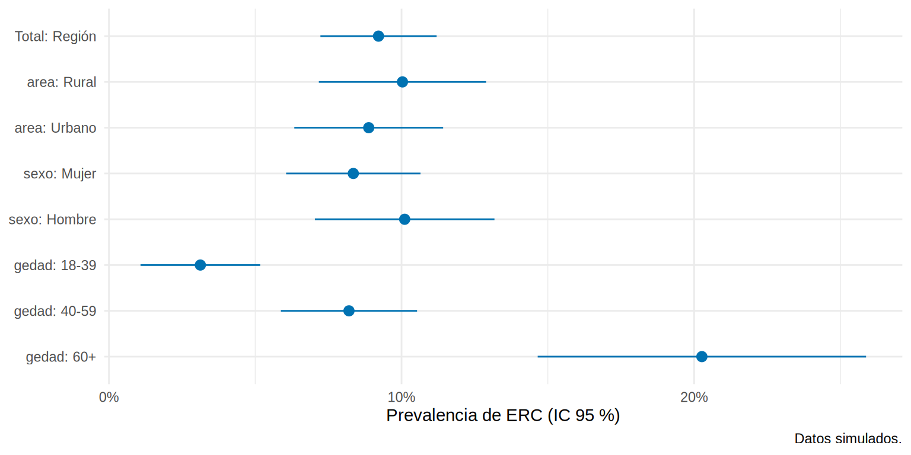

library(tidyverse)
library(survey)
enc <- read_csv("Bases/encuesta_erc.csv") |>
mutate(gedad = cut(edad, c(17, 39, 59, 100), labels = c("18-39", "40-59", "60+")),
sexo = factor(sexo, c("F", "M"), c("Mujer", "Hombre")))
dis <- svydesign(ids = ~cluster, strata = ~area, weights = ~peso, data = enc, nest = TRUE)Caso integrado y tamaño de muestra
Caso: prevalencia de ERC en la región
Pregunta: ¿Cuál es la prevalencia de ERC en los adultos de la región y qué factores se asocian? Reunimos todo el capítulo en un flujo de trabajo reproducible.
1. Diseño y marco (se escribe antes de recolectar)
| Elemento | Decisión |
|---|---|
| Población objetivo | Adultos ≥ 18 años residentes de la región |
| Marco | Lista de 600 comunidades (360 urbanas, 240 rurales), con su tamaño |
| Diseño | Bietápico estratificado: 30 comunidades por estrato y 25 adultos por comunidad |
| Sobremuestreo | Zona rural (casi el doble de su proporción poblacional) para estimar por área |
| Desenlace | ERC (TFGe < 60 o albuminuria ≥ 30 mg/g persistente) |
| Análisis |
survey, con pesos de muestreo y ajuste por no respuesta |
2. Estimaciones con el diseño
prev_por <- function(var) {
svyby(~erc, as.formula(paste("~", var)), dis, svymean, vartype = "ci") |>
as_tibble() |>
rename(nivel = 1, prevalencia = erc, inf = ci_l, sup = ci_u) |>
mutate(variable = var, nivel = as.character(nivel))
}
tabla <- bind_rows(
tibble(variable = "Total", nivel = "Región",
prevalencia = coef(svymean(~erc, dis)),
inf = confint(svymean(~erc, dis))[1], sup = confint(svymean(~erc, dis))[2]),
prev_por("area"), prev_por("sexo"), prev_por("gedad")
)
tabla |> mutate(across(c(prevalencia, inf, sup), \(x) round(100 * x, 1)))# A tibble: 8 × 5
variable nivel prevalencia inf sup
<chr> <chr> <dbl> <dbl> <dbl>
1 Total Región 9.2 7.2 11.2
2 area Rural 10 7.2 12.9
3 area Urbano 8.9 6.3 11.4
4 sexo Mujer 8.4 6.1 10.6
5 sexo Hombre 10.1 7 13.2
6 gedad 18-39 3.1 1.1 5.2
7 gedad 40-59 8.2 5.9 10.5
8 gedad 60+ 20.3 14.7 25.9ggplot(tabla, aes(prevalencia, fct_rev(fct_inorder(paste(variable, nivel, sep = ": "))), xmin = inf, xmax = sup)) +
geom_pointrange(color = "#0072B2") +
scale_x_continuous(labels = scales::percent_format(accuracy = 1)) +
labs(x = "Prevalencia de ERC (IC 95 %)", y = NULL, caption = "Datos simulados.") +
theme_minimal(base_size = 11)
3. Factores asociados
OR IC_inf IC_sup
diabetes 4.28 2.49 7.34
hta 2.08 1.20 3.61
I(edad/10) 1.52 1.31 1.77
sexoHombre 1.28 0.80 2.03
areaUrbano 0.99 0.62 1.57Interpretación descriptiva: en esta región, la diabetes y la hipertensión se asocian con mayor odds de ERC, y por cada 10 años de edad el odds crece. No diremos que “la diabetes causa ERC con un OR de 4”: es una asociación ajustada, y la causalidad exige los marcos de los capítulos 3 y 12. (Ver el Cap. 8 sobre la falacia de la Tabla 2: no interpretar todos los coeficientes de un modelo como efectos.)
Tamaño de muestra para estimar una prevalencia
Para estimar una proporción \(p\) con precisión absoluta \(d\) (semiamplitud del IC) y confianza del 95 %:
\[ n_0 = \frac{z^2\,p\,(1-p)}{d^2} \]
y, si el diseño tiene conglomerados, se multiplica por el efecto de diseño, y se agrega una reserva por no respuesta:
\[ n = \frac{n_0 \times \text{deff}}{\text{tasa de respuesta}} \]
n_prevalencia <- function(p, d, deff = 1, resp = 1, z = 1.96) {
ceiling(z^2 * p * (1 - p) / d^2 * deff / resp)
}
## Esperamos ~8 % y queremos ±2 puntos de precisión
n_prevalencia(p = 0.08, d = 0.02) # MAS[1] 707n_prevalencia(p = 0.08, d = 0.02, deff = 1.6) # conglomerados 25 x comunidad[1] 1131n_prevalencia(p = 0.08, d = 0.02, deff = 1.6, resp = 0.75) # y 25 % de no respuesta[1] 1508Tres reglas de la práctica:
- La precisión pide proporciones esperadas; si no se tiene idea de \(p\), usar \(p = 0.5\) es el caso más conservador (pero muy caro si la verdadera es 8 %).
- Para estimar la prevalencia por subgrupos (rural/urbano), el cálculo debe hacerse por subgrupo.
- El deff se toma de una encuesta piloto o de la literatura con un diseño parecido.
Las cuentas de comparación de grupos y de poder estadístico están en el Cap. 20.
grid <- expand_grid(d = c(0.01, 0.02, 0.03), deff = c(1, 1.6, 2.5)) |>
mutate(n = map2_dbl(d, deff, \(d, f) n_prevalencia(0.08, d, f)))
ggplot(grid, aes(factor(d * 100), n, fill = factor(deff))) +
geom_col(position = "dodge") +
scale_fill_brewer(palette = "Blues", name = "Efecto de diseño") +
labs(x = "Precisión deseada (± puntos porcentuales)", y = "Tamaño de muestra",
caption = "Prevalencia esperada 8 %.") +
theme_minimal(base_size = 11)
Lista de verificación para reportar una encuesta
Tip💡 Qué debe decir tu artículo o informe
Importante🎯 En resumen
- Un análisis de encuesta ordenado: diseño → pesos →
svydesign→ estimaciones con IC → modelos con el diseño. - Los resultados de un modelo en datos de encuesta son asociaciones; la causalidad se trabaja aparte.
- El tamaño de muestra para una prevalencia es \(z^2 p(1-p)/d^2\), multiplicado por el efecto de diseño y dividido por la tasa de respuesta.
- Reporta el diseño, los pesos, la respuesta y las limitaciones.
Ejercicio
- Calcula el tamaño de muestra para estimar una prevalencia esperada de 3 % de ERC avanzada con ±1 punto, deff 2 y 80 % de respuesta.
- Agrega a la tabla del caso la prevalencia de ERC por diabetes (sí/no) con IC.
- Escribe un párrafo de Métodos para el estudio de esta región siguiendo la lista de verificación.
Nota editorial
- Capítulo redactado con asistencia de IA y revisado por el autor. Todos los datos son simulados; la región, la clínica y la encuesta son ficticias.